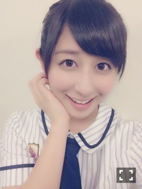
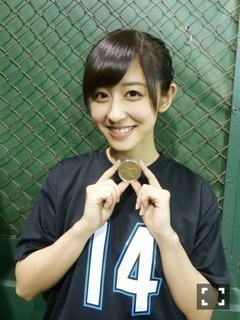
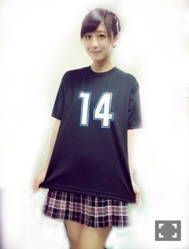
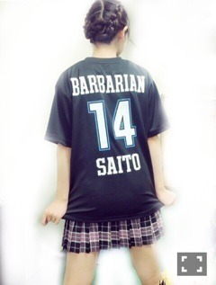
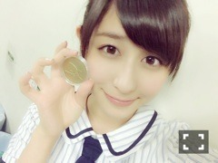
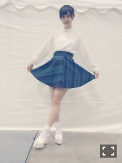
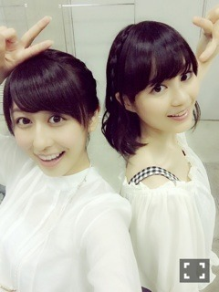

| 2014/06 24 Tue | パールボウル、コイ ントス！！(´>∀<｀)ゝ |
ちはるーむへようこそ◡̈

今日は、去年に引き続きパールボウルに出演させていただきました！！
選抜メンバーと共にロマンスのスタート、夏のFree&Easyを披露させていただきました！！
チアリーダーの皆さん、圧巻のパフォーマンスでした( ´_ゝ`)♡
そして私は1人早く準備して、
試合を決める大事なコイントスまでやらせていただきました( ; ; )♡
ぱぱのユニフォームを着て。。



ぱぱは今も現役でクォーターバック努めてます！笑
本当は表彰式まで参加する予定だったんですが、
まだ高校生なので出演時間が限られてるということで
仕方が無いそうです。。
待っててくださった皆さんありがとうございました( ´_ゝ`)！！！
去年に引き続き、また参加させていただいて、
コイントスという大役まで任せていただいて、
たくさんのスタッフさん、たくさんのチアリーダーの皆さん、メンバー、そしてファンの皆さんに感謝します。
素直にすごく嬉しくて、楽しかったです！！
色んなメディアの方に10福神+ちはるでいう取材に受けましたので、
見てくださったら嬉しいです


そしてそして、明日の朝は早起きで！
めざましジャンケンに、私たち乃木坂46がでます！！
毎朝毎朝本当に欠かさずやっている日課なので
それに参加できることがとても嬉しいです(｡-_-｡)

土曜日、個別握手会。
土曜日は、初めての体制での握手会で、色々と大変な思いもたくさんしたと思います。
それでも、楽しかった！会えてよかった！って
言ってくださるちはるーむめいとの皆さんが大好きです！！(｡-_-｡)♡
いつも応援してくれて、あたたかく見守ってくれてありがとうヽ(；；)丿
私自身も、色々変わってびっくり、戸惑いながらも
すごく楽しく握手会を行うことができました！！！
来てくれて本当にありがとうヽ(；；)丿

ブラウスに、スカートで、王道清楚系


いくちゃんとピース\( ˆoˆ )/
また明日からも頑張ります！！
アンダーライブ、そろそろだぞ(｡-_-｡)♡
ばいるんっ
るんるんっ
ちはるんっ
(´>∀<｀)ゝ
コメント(210)
2014/06/24 00:00